Curio-QA is a QA app that allows its users to send curios to all of its users. With this app, its users will be able to send and receive their questions in the form of curios. The receiver could answer the curio on any platform they like and then mark the curio as answered.
Currently, this app is only a web service that can provide its services via REST API. For real-life implementations, a client should be created. Thanks to the advantages of REST API, this app can be used in mobile apps, desktop apps, and web apps.
Check Server Status
curl --location 'http://localhost:8080/api/server/status'
Register
curl --location 'http://localhost:8080/api/user' \
--header 'Content-Type: application/json' \
--data '{
"displayName": "Lucky Setiawan",
"username": "luckysetiawan",
"password": "examplepassword123!"
}'
Login
curl --location 'http://localhost:8080/api/login' \
--header 'Content-Type: application/json' \
--data '{
"username": "luckysetiawan",
"password": "examplepassword123!"
}'
Logout
curl --location --request POST 'http://localhost:8080/api/logout'
Get All Active Users
curl --location 'http://localhost:8080/api/user/active'
Get All Users
curl --location 'http://localhost:8080/api/user'
Find User
curl --location 'http://localhost:8080/api/user/luckysetiawan'
Insert
curl --location 'http://localhost:8080/api/curio/luckysetiawan' \
--header 'Content-Type: text/plain' \
--data '{
"content": "What do you plan to achieve one year from now?"
}'
Update
curl --location --request PUT 'http://localhost:8080/api/curio/_ID'
SVD Audio Watermarking is an app that implements the Singular Value Decomposition method for digital audio watermarking. This app offers a highly robust and imperceptible watermarking solution to insert an image watermark into a digital audio file.
SVD Audio Watermarking back end is built on Flask and it works as a microservice. While the front end app is created using Next.js.
Here are the main features that are offered by SVD Audio Watermarking:
Home Page
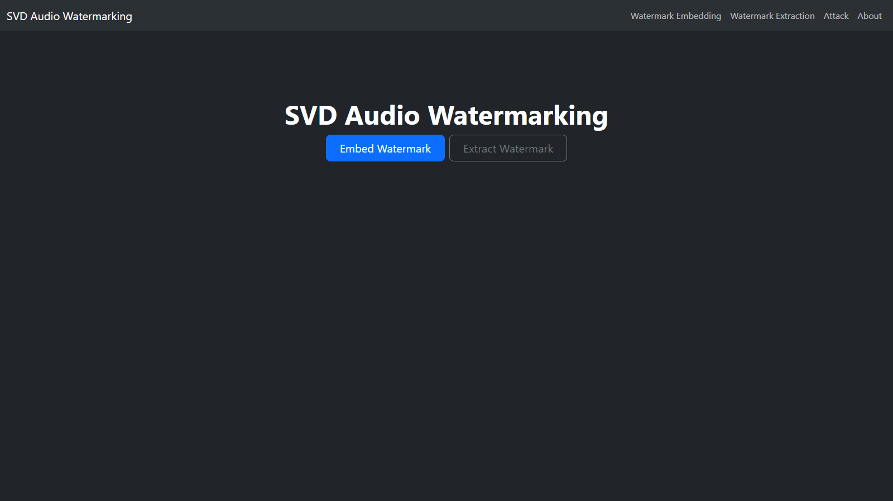Watermark Embedding
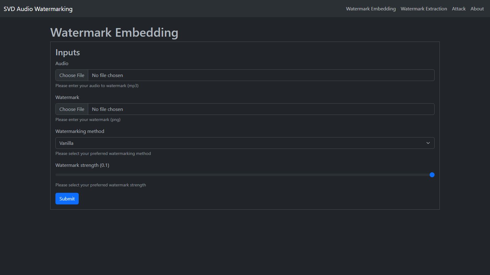Watermark Embedding Result
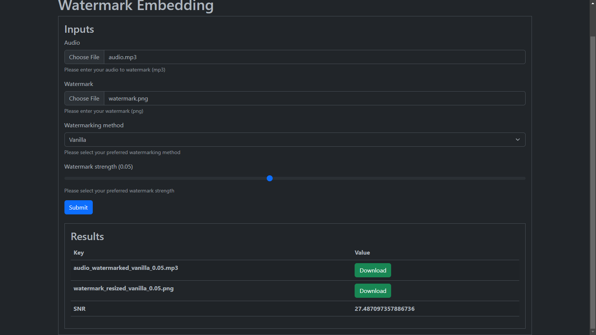Watermark Extraction
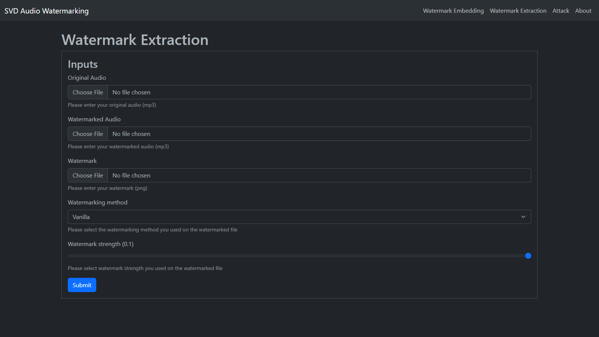Watermark Extraction Result
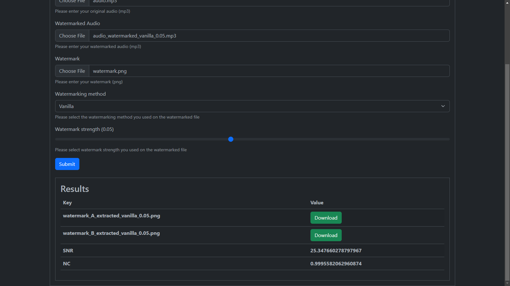Signal Processing Attacks
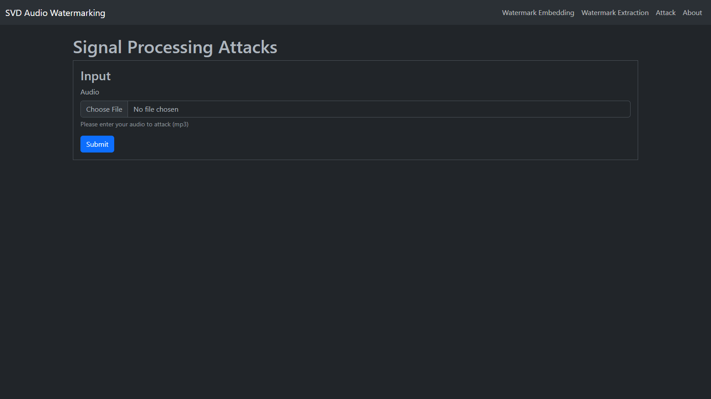Signal Processing Attacks Result
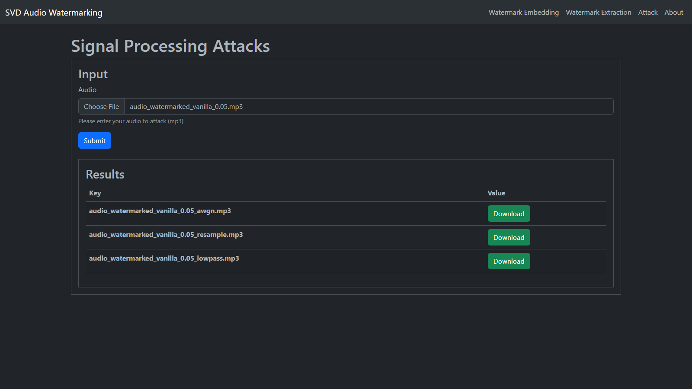Original Watermark
Here is the original watermark used to test the robustness of this app:
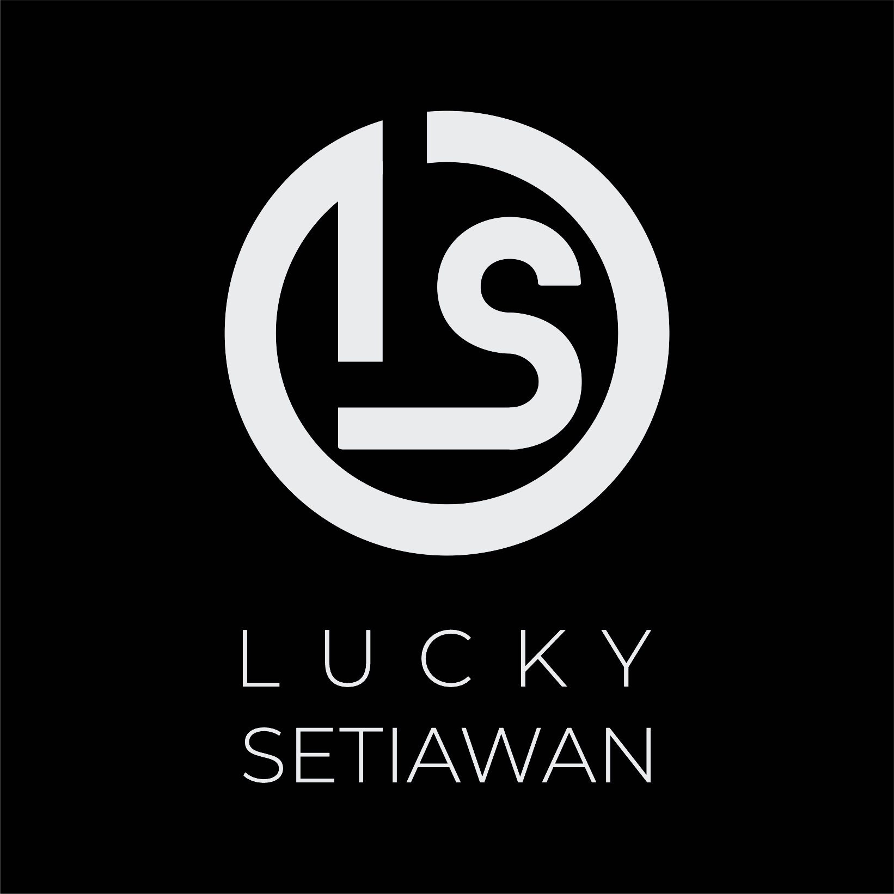Extracted Watermark
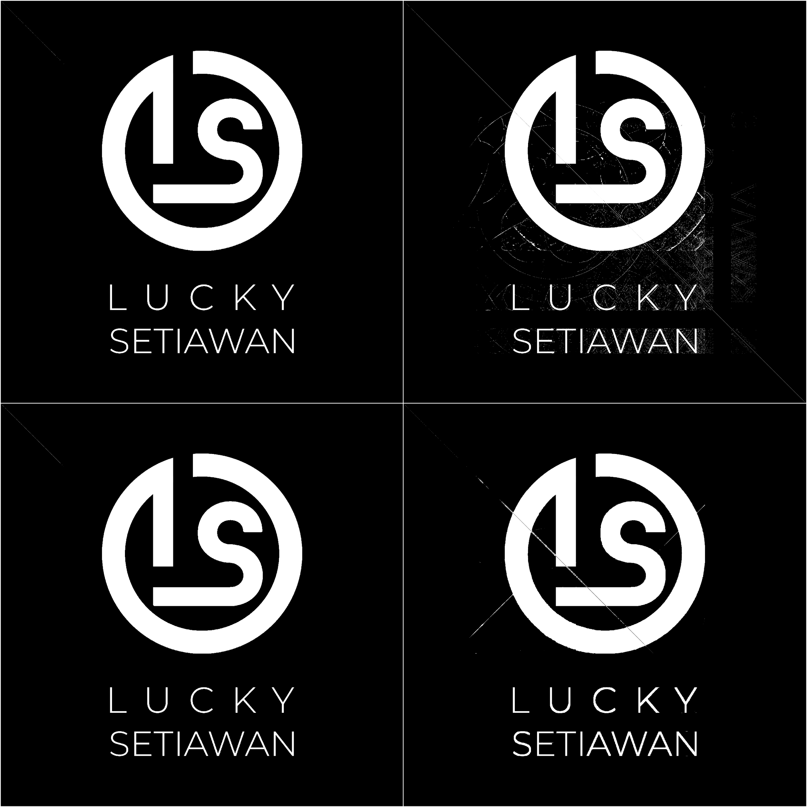Attack used: (1) Without attacks, (2) AWGN, (3) Resampling, (4) Low-pass filter
Imperceptibility
Comparison of the first second of the original audio with the watermarked audio.
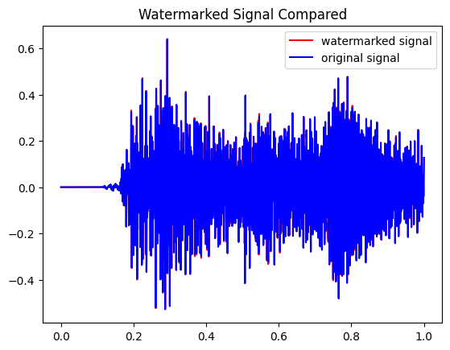Phasmophilia is a horror shooter game inspired by the game Phasmophobia. This game is created using Unity and available on Windows. Players will be a ghostbuster equipped with special bullet that can repel ghosts. The main goal is to repel all ghost including boss with HP above 0.
Gameplay Demo
Zombie Survival is a survival shooter game similar to Pacman. This game is created using Python. The zombie can wander (5s) and chase (20s). There's 2 AI method that zombie can use to chase the player, they are heuristic and A*. The main goal is to survive as long as possible without being bitten by the zombie 3 times.
Explanation and Gameplay Demo
Masimelrowoo is an Android application that provides services to deliver questions or messages between members. Through this app, users can send questions or messages to other users either directly or to all users.
Login
Send Masimelrowoo
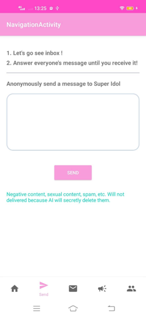Personal Mailbox & Global Mailbox
Friend
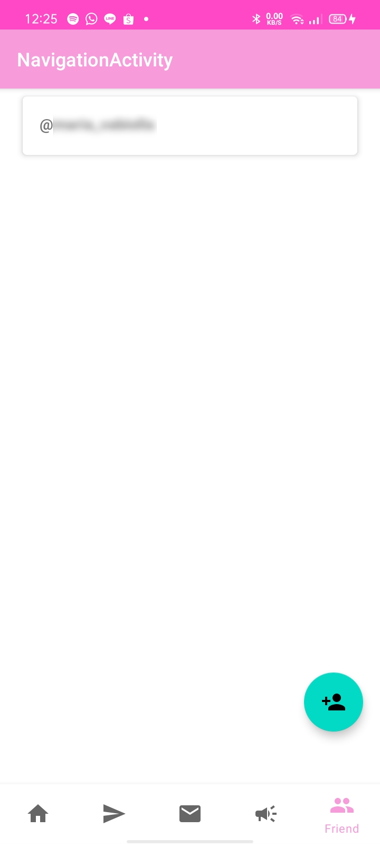Use the toggle below to show/hide professional experiences.